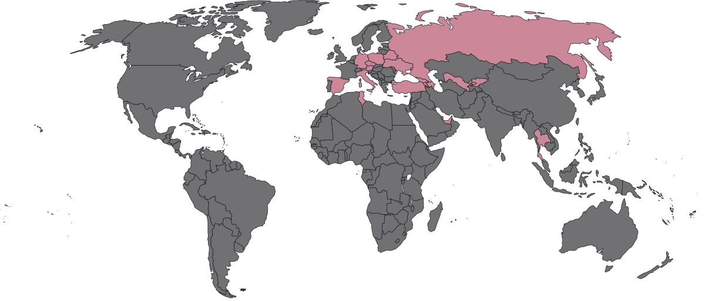

Human
My name is Dora
Shcherbatyuk
and I have also gone by the pseudonym Pandora Lewandowski for many years.
I have been
professionally
searching for cybercriminals all over the world for almost all my conscious life. My alter ego is an
improver-biohacker.
I research various ways to improve my cognitive and physical parameters based on evidence-based
medicine. Another side of my personality is an eternal love to systematize chaos and
turn it to
effective environment. I am unbridled analyst. It's crucial for me as an
aesthete to find beauty in usual pieces of this world.
Languages:
Russian (Native), English (C1), Spanish (B1)
What value I can share with you
- Systematizing life and helping to develop effective habits
- Work as a programmer's duck at any sphere
- Building digital office
Meta system
I'm on my way to systematizing the following things:
- Routines
- Tasks&Time management
- Wardrobe
- Traveling
- Cooking and healthy food
- Trainings
- Habits
- Sleep
Random online coffee with me
if I were a tag:
#rationalism,
#system,
#achieving,
#knowledge,
#minimalism,
#essentialism,
#horizons,
#sporty_and_rich.
Investigator
I have been catching cyber criminals my whole live.
Working in different parts of cyber security allows me to gain a T-shaped skills.
I am proud to be a part of open source intelligence community and share knowledge with the
society.
My scope of experience
- Cyber Investigator
-
- Investigated various cyber attacks around the globe
- Conducted forensic examinations
- Built methodology of investigations
- Developer
-
- Product owner of a component of Threat intelligence System
- Business analyst duties: development of new project
features and
identification of competitive advantages, competitors' analysis
- Researched public data sources and integrated it into an
internal system
- Trainer
-
- Developed Cyber
Investigation Course from scratch
- Conducted a lot of training sessions for different
audience in CIS, MEA and APAC regions
- Speaker
-
- Became an official speaker of company
- Took parts in podcasts, conferences and radio broadcast
- Gave lectures on the profession to university students and
children
What value I can share with you
- Building personal digital hygiene
- Conducting on-demand investigations
- Open to new opportunity for public speaking
Links & Contacts
In any cyber security cases you can contact directly via my working email:
Mail shcherbatyuk@group-ib.com
Download my CV
Room for development
I follow the concept of lifelong learning. The next step in my road map is:
- Develop management skills
- Write a book about cyber investigations
if I were a tag:
#cyber_security,
#cyber_crime,
#cyber_investigations,
#OSINT,
#cryptocurrency_investigations,
#threat_intelligence,
#APT,
#forensics,
#community,
#practice,
#digital_footprint.
Biohacker
I am strongly believe that we should utilize modern technologies for the good of our existence,
particularly our physical and mental capabilities. I follow the tranhumanism ideas and
always try to
combine them with the best output of biohacking. But I'am also sure that besides improvements
with
the help of medicines and gadgets we should watch our habits, strike work-life balance and
take
care of our body.
Quantified self
I am a part of Quantified self community. H. James Harrington said:
Measurement is the first step that leads to control and eventually to improvement. If you
can’t measure something, you can’t understand it. If you can’t understand it, you can’t control it.
If you can’t control it, you can’t improve it.
What's why I measure the next parameters type:
- Sleep
- Food
- Mindfulness time
- Body shape
- Trainings
- Blood
- Thoughts
- Finances
- Supplements
- Brain activity
My Set up and Dashboard
Makeover
I work to overcome the stigma of cosmetology and plastic surgery by showing my cases. I believe that
you
can change yourself and your body out of love for yourself, not to find a way to please others.
What value I can share with you
- Building your own effective routine
- Generating a list with parameters which is suitable for your aim
- Giving some tips for improving wellbeing
I do not do health counseling and recommend any supplements.
Links & Contacts
Room for development
The next step toward my improvement will be to combine all the data I have into a single system.
if I were a tag:
#biohacking,
#quantified_self,
#transhumanism,
#productivity,
#time_management,
#beauty,
#sport,
#tDCS,
#neuroscience,
#life_learning,
#open_longevity,
#makeover,
#experiment,
#good_sleep.
Traveler
I am a cosmopolitan. It's important for me to learn about other cultures and values while traveling.
When I'm traveling, my life slows down from the experiences I've had. I leave a piece of each
country inside me, which makes me stronger.
Now based in:
Moscow
My World Scratch Map

What value I can share with you
Room for development
In the future, I would like to explore the Asian region and study the philosophy of Buddhism.
if I were a tag:
#travel,
#foodie,
#sightseeing,
#mountains,
#hiking,
#wonders,
#languages,
#people.